Lab1 设计FIR滤波器分离鸟类声音(hw)
目标
在完成本实验后，您应当学会：
如何使用Vitis HLS构建一个项目
在Vitis HLS中进行仿真、综合与IP导出
使用Vivado对HLS导出的IP进行集成
使用PYNQ构建一个简单的应用
简而言之，您将掌握使用HLS进行加速核设计与部署到PYNQ的基本流程。出于篇幅限制，本实验仅介绍基本工具操作流程。
环境要求
PYNQ-Z2远程实验室服务或物理板卡
Vitis HLS
Vivado
实验步骤
1. 在Vitis_HLS中设计FIR IP
1.1 创建一个新项目
打开Vitis HLS软件，点击Create Project，创建一个新的项目
在Project name输入项目名fir_hls_prj，点击Browse选择一个合适的目录位置，点击Next

点击Add Files…，将src目录下的fir.h和fir.cpp添加到项目中
点击Top Function栏中的Browse按键，选择fir_wrap，这是我们进行综合时候的顶层函数，点击Next
点击Add Files…，将src目录下的fir_tb.cpp添加到项目中，点击Next

下面进入到Solution Configuration界面，保持其他选项不变，在Part Selection栏最右侧点击 …. 字样的按钮，在Search栏的搜索框中输入xc7z020clg484-1，即PYNQ-Z2板卡所使用的器件型号

点击Finish，完成项目的创建
1.2 C-Simulation
在完成项目创建后，Vitis HLS会跳转到新的界面，其由四个主要部分组成：
左上方的Explorer，其包含了工程中的各个文件
左下方的Flow Navigator，其展示了HLS设计中的各环节
右上方的编辑器区域，开发者在此修改设计的代码
右下方的Console，包含了控制台、报错信息、版本控制等

下面，我们对设计进行C仿真。在左下方的Flow Navigator中点击Run C Simulation，在弹出的C Simulation Dialog窗口中不做改动，点击OK进行C仿真

等待数秒，在仿真完成后Vitis HLS自动打开一个log文件，可以看到已经设计通过了C仿真
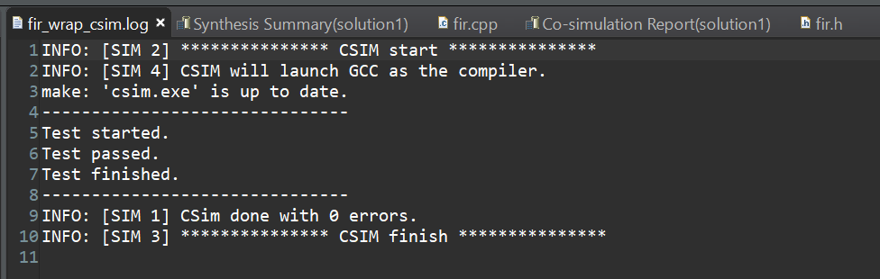
1.3 C-Synthesis
下面，我们对设计进行C综合。在左下方的Flow Navigator中点击Run C Synthesis，在弹出的C Synthesis - Active Solution窗口中保持各选项不变，点击OK开始综合
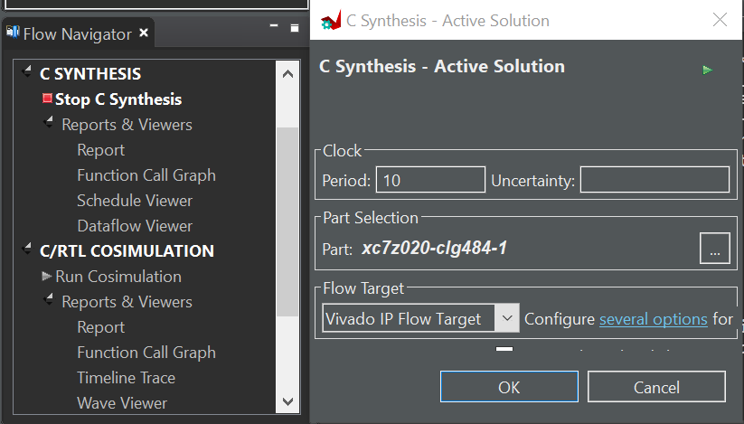
等待数秒，Vitis HLS会将其综合的各步骤的信息打印在Console中
综合完成后，会弹出 Systhesis Summary(solution1) 窗口，我们可以在此看到Vitis HlS 给出的时钟频率信息、时钟周期数和资源消耗等
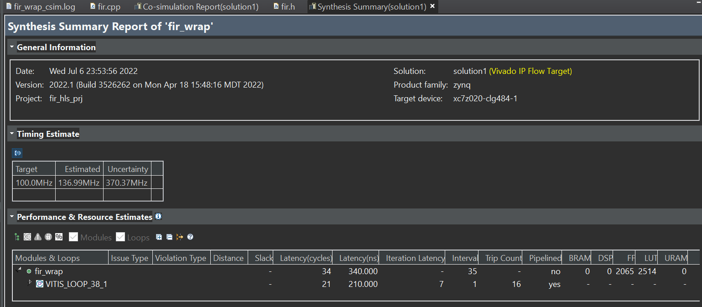
1.4 C/RTL Co-simulation
下面，我们对设计进行C-RTL联合仿真。在左下方的Flow Navigator中点击Run C/RTL COSIMULATION，在弹出的Co-simulation Dialog窗口中保持各选项不变，点击OK开始综合
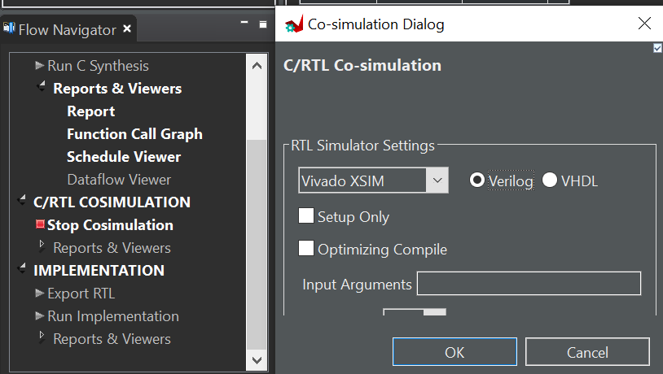
等待约1分钟，C/RTL联合仿真的综合时间通常较长，仿真结束后会弹出Co-simulation Report(solution1) 窗口 ，包含了是否通过仿真、性能估测等信息
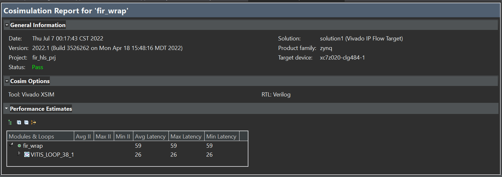
1.5 导出RTL
下面，我们对设计进行RTL导出。在左下方的Flow Navigator中点击Export RTL，在弹出的Export RTL窗口中保持各选项不变，点击OK开始RTL的导出
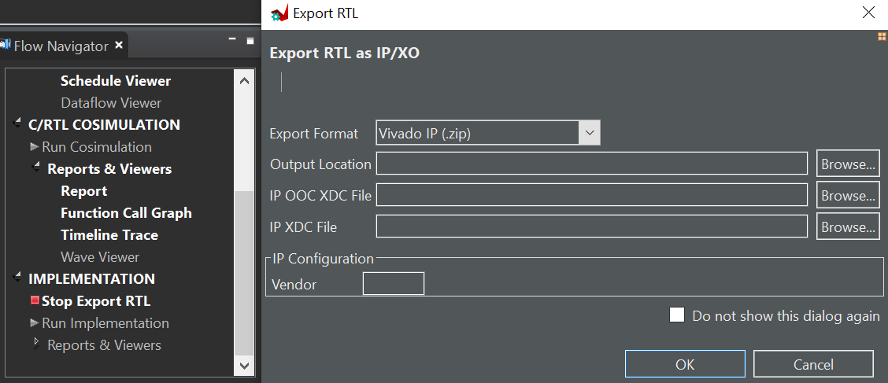
等待约半分钟，Console中打印Finished Export RTL/Implementation. 表明RTL设计已经导出完成，你可以在**\fir_hls_prj\solution1\impl\export.zip**找到导出的文件
为了后续使用的便利，请将**\fir_hls_prj\solution1\impl\export.zip文件解压到其所在目录下，即得到一个\fir_hls_prj\solution1\impl\export** 文件夹
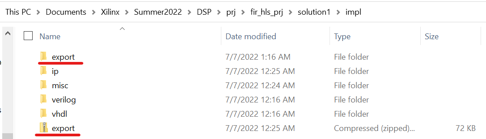
至此，我们已经完成了FIR加速核的设计与导出
2. 在Vivado中进行IP集成
2.1 创建一个新Vivado项目
打开Vivado软件，点击Create Project，创建一个新的项目，点击Next
在Project name输入项目名fir_vivado_prj，点击右侧的 … 按键选择一个合适的目录位置，点击Next

进入Project Type界面，勾选上Do not specify sources at this time，再点击Next

进入Default Part界面，在Search栏中搜索xc7z020clg484-1，将其选中，再点击Next

点击Finish完成项目创建
2.2 导入IP
我们需要首先将从Vitis HLS中导出的IP导入到Vivado中，点击左侧窗口Flow Navigator中的Settings 选项，弹出Settings窗口
将左侧的Project Settings中展开IP栏目，选中Repository项，点击右侧面板中的 + 按键，在弹出窗口中选择刚才解压出来IP，即**\fir_hls_prj\solution1\impl\export**，在点击Select
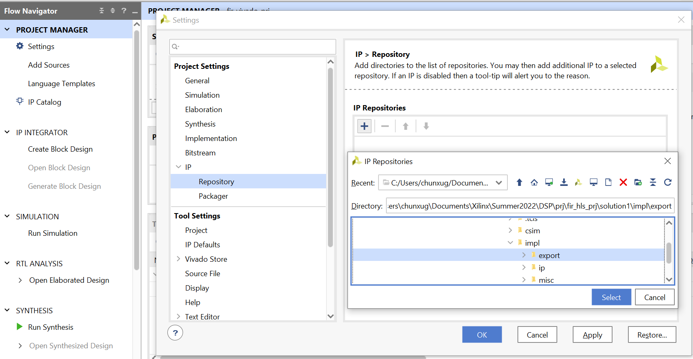
可以看到对应的IP已经被成功添加到了工程中，在两个窗口中依次单击OK来关闭这些窗口

2.3 创建Block Design
下面我们创建一个Block Design，利用Vivado的IP集成功能来构建完整系统。在左侧的Flow Navigator中点击IP INTEGRATOR > Create Block Design，在弹出的Create Block Design 窗口中保持各选项不变，设计名称使用默认的design_1，点击OK创建Block Design
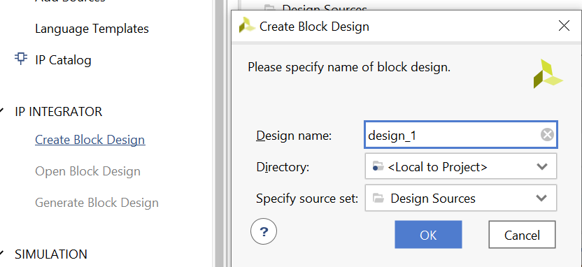
在出现的Diagram窗口中点击上方的 + 按钮，会弹出一个搜索框，在输入栏中键入zynq，双击备选项中出现的ZYNQ7 Processing System，即可将该IP添加到设计中
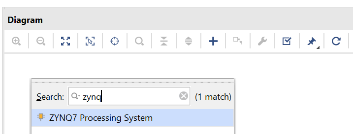
在窗口上方会出现蓝色下划线提示Run Block Automation, 单击该区域弹出对应窗口，我们保持默认设置不变，直接点击OK
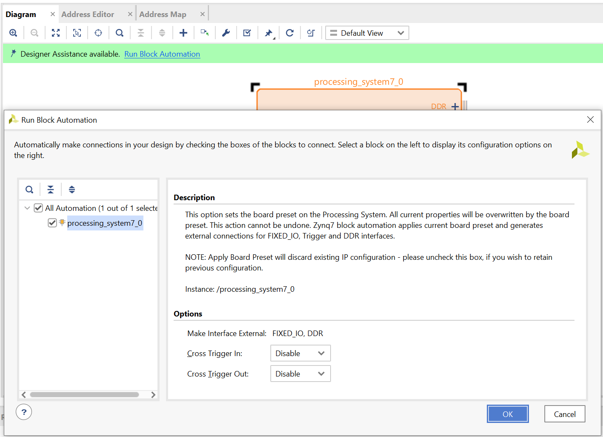
下面，我们需要对上述Processing System进行配置，添加一个HP端口
双击Diagram中的processing_system7_0模块，弹出Re-customize IP窗口
在左侧Page Navigator中选择PS-PL Configuration页面，展开右侧选项中的HP Slave AXI Interface，勾选上S AXI HP0 interface选项
点击OK

点击Diagam窗口上方的 + 按钮，搜索fir，可以看到我们刚才导入的IP已经可以使用了，双击Fir_wrap以将其添加到设计中

下面我们对设计进行自动连线。点击窗口上方的蓝色下划线提示Run Connection Automation，弹出对应窗口，将左侧All Automation 选项勾选上，再点击OK
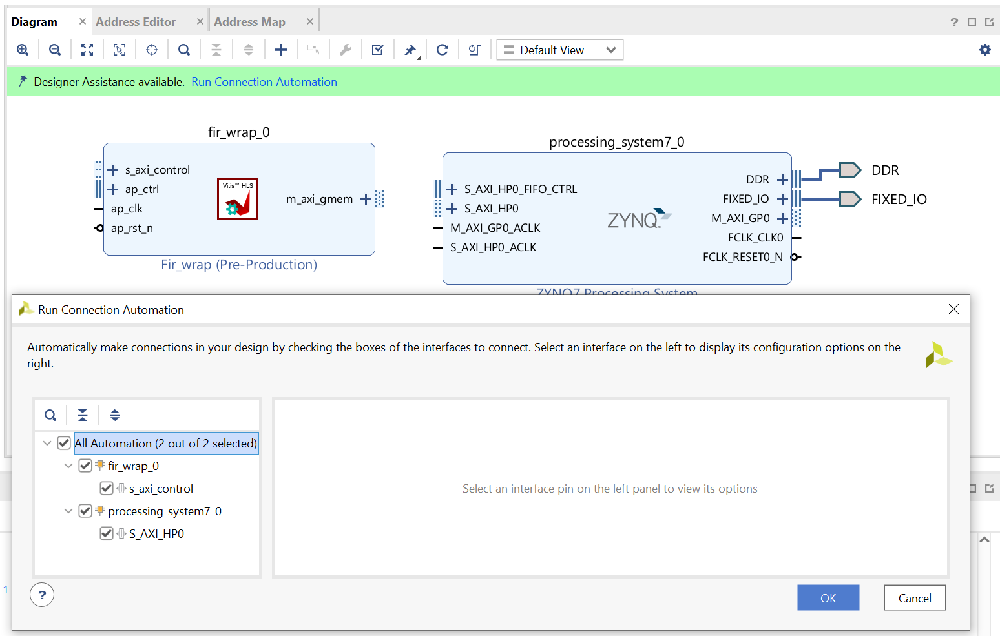
系统将根据对应接口自动进行连线，我们可以得到如下图的设计
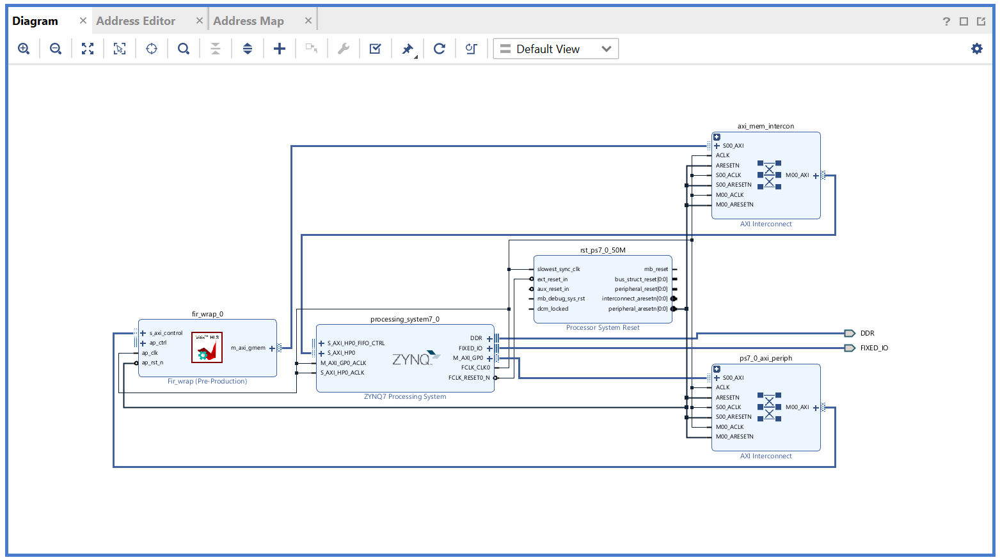
在Diagram上侧的工具栏中点击勾形图标Validate Design，对设计进行验证
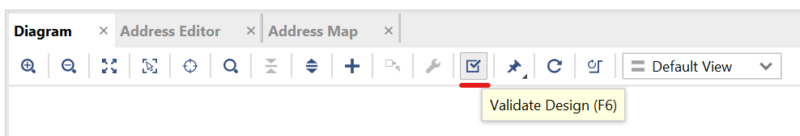
在左侧的Source > Design Sources > design_1选项上右键，选择Generate Output Products

在弹出窗口中保持各配置不变，点击Generate，这一过程将耗费约1分钟的时间

在左侧的Source > Design Sources > design_1选项上右键，选择Create HDL Wrapper，在弹出窗口中保持选项不变并点击OK，完成后可以看到在design_1.bd上层嵌套了一层design_1_wrapper.v文件

2.4 综合与生成比特流
在左侧的Flow Navigator中选择Run Synthesis，在弹出窗口中保持选择不变并选择OK
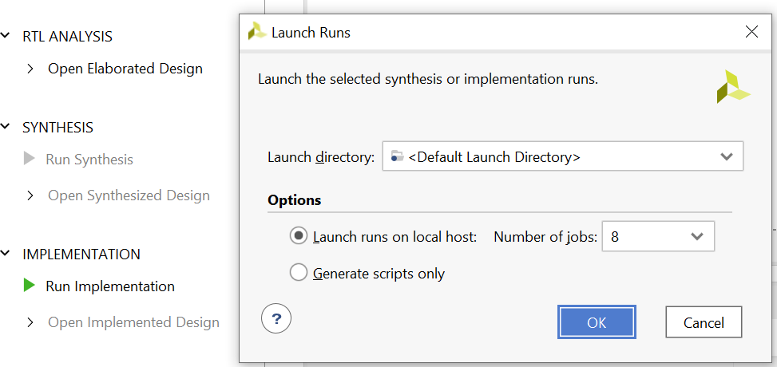
综合完成后，会弹出Synthesis Completed窗口，在Next栏中保持默认的Run Implementation选项，并点击OK，如果出现新弹窗，同样保持默认选项并点击OK即可

Implementation结束后，会弹出Implementation Completed窗口，在Next栏中选择Generate Bitstream选项，并点击OK，如果出现新弹窗，同样保持默认选项并点击OK即可

比特流生成后，会弹出Bitstream Genreation Completed窗口，我们直接点击Cancel即可

至此，我们已经完成了硬件部分的设计与导出
3. 构建PYNQ设计
3.1 提取bit与hwh文件
在文件管理器中访问 \fir_vivado_prj\fir_vivado_prj.runs\impl_1 目录，该目录下的design_1_wrapper.bit文件即为生成的比特流文件，将其复制到自己的文件夹中保存，并重命名为fir.bit

在文件管理器中访问 \fir_vivado_prj\fir_vivado_prj.gen\sources_1\bd\design_1\hw_handoff 目录，其中的design_1.hwh即为我们需要的hardware handoff文件，将其复制到自己的文件夹中保存，并重命名为fir.hwh

3.2 访问Jupyter
请先参考下发的《PYNQ远程实验室指南》完成账号注册与Jupyter访问
登录Jupyter界面，点击界面右上方的upload按钮，将以下文件上传到开发板上:
/jupyter 目录下的fir.ipynb, chaffinch.jpg, curlew.jpg, birds.wav
上一步中得到的fir.bit与fir.hwh文件
如果你在前面操作中导出失败了，你也可以先使用 /overlay 目录下的fir.bit与fir.hwh文件上传，以完成余下实验

3.3 部署与运行Overlay
在Jupyter中进入到fir.ipynb页面，Kernel自动加载完成显示为Python3字样
点击窗口上侧的Run按钮，Jupyter Notebook会执行当前Cell，同时自动切换到下一个Cell

完成按照顺序依次点击Run至结束即可，各代码块的含义在Jupyter Notebook中已经标注，请阅读Jupyter Notebook中的信息继续完成实验。